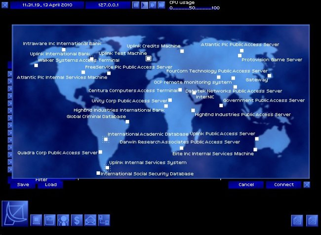
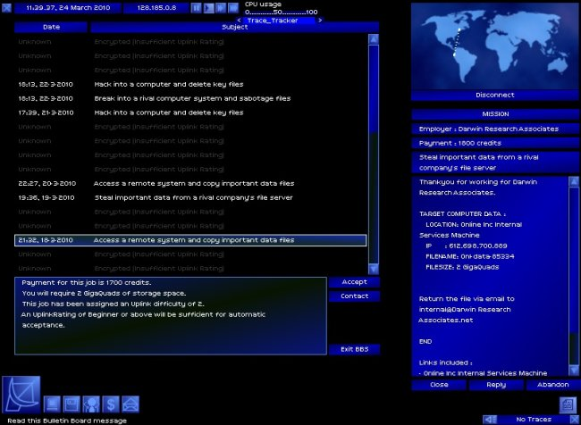
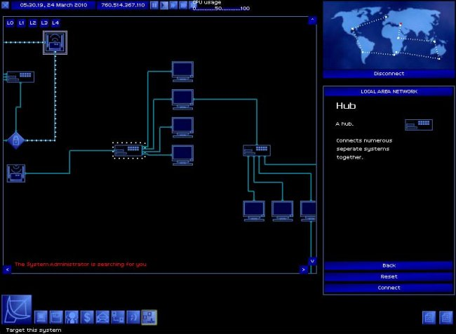

Game review by : Mr. Roboto
Year : 2001
Developer : Introversion Software
Degree of Cyberpunk visuals : High
Correlation to Cyberpunk themes : High
Rating : 9/10

Uplink: we pwn the world.
The first true hacking sim: some might argue that hacking simulations have been around long before Uplink. Activision's Hacker can be called one, but the "hacking" there is only a pretext for the real game within. Uplink, on the other hand, is all hacking. OK, the hacking is more reminiscent of Hollywood's idea of hacking from WarGames and such, but the hacking is what Uplink is all about; No lame pretext to "save the world".
Overview: March, 2010. After hearing rumors and searching the Internet, you finally found a public access server for the secretive Uplink Corporation, whose "agents" are hackers hired to break into systems to accomplish different goals. After registering as an agent, you need to prove your skills with a test mission, then you can pick from different missions with different difficulties, and work your way up the agent ranks to become a Terminal hacker.
The missions range from simply breaking into systems to steal or delete a file. Then, you get to crash mainframes, commit identity fraud, and make secret bank transfers. At the highest levels, you get to swipe entire databases off high-security LANs and frame innocent people for cybercrimes. There are banking systems, LANs, a Social Security database, a Global Academic database, and a Global Criminal database to hack. Fortunately, Uplink has a "corporate store" where agents can buy needed software like password breakers, security bypassers, decyphering and decryption tools, and hardware upgrades for their gateways.

Choose your missions, and hack your way to the elite ranks.
A story behind the hacking: about mid-March, you receive a message from the now-deceased top agent that the Andromeda Research Corporation, or ARC, is working on a project called Revelation. If you act on the information in the message, you get to take part in the storyline and even can choose the fate of the Internet. ARC wants to destroy the Net, while a rival company, Arunmor, wants to stop them. Whose side will you choose?
Hacking... Hollywood style: as mentioned before, the "hacking" is more out of the movies than any real hacking, which offten involves quite a bit of research and social engineering. You work with a Windows-like point-click-drag interface to get your work done, though taking down mainframes requires use of the system's command-line console . Some hacker purists would probably take exception with the way hacking is depicted in Uplink, but whose to say what hacking will be like in 2010 as opposed to, say, 1995. The focus is what you do on the inside of targeted systems.
A tribute to Cyberpunk: There are many secrets in Uplink to discover, such as the many secret systems that pay homage to cyberpunk culture: Steve Jackson Games, OCP, Protovision... even Introversion. Even the voice recognition on some high-security systems pays tribute: my voice is my passport, verify me.

Lost yourself in a LAN? The admin will find you soon enough...
Modifications: Introversion has been selling a CD with the Uplink source code for a while, and fans have been able to make mods and add-ons since version 1.31 came out. Add-ons include custom gateways, additional company and agent names, agent photos, and modifications to the basic game including the F.B.I. mod that replaces the Global Criminal Database with the "Fubared, Bungling Idiots" agency, and uMP3 where users can create a custom MP3 playlist to replace the in-game music.
Some people may have seen a version of Uplink in stores called "Uplink: Hacker Elite" from Strategy First. This is the exact same game as Uplink, but due to a bankruptcy filing by Strategy First resulting in non-payment of royalties to Introversion, plus their alteration of the code to make U:HE incompatible with mods, Uplink fans and Introversion itself do not support Hacker Elite and advise to not buy it.
The bottom line: Uplink is one of those rare games that does more than redefine a genre, it actually creates one. Since its release in 2001, there have been several others that attempted to duplicate Uplink's cult success. Unfortunately, they can't hold a candle to Uplink, not even to light its farts.
I would have given Uplink a perfect 10 if had more variety of missions, but that's what fan mods are for. Uplink is one game that is a must have for any cyberpunk fan. Its many secrets should keep any hacker-agent occupied for some time, and the modifications out there only add to its replayability. Just make sure you steer clear of the Strategy First version and get it directly from Introversion or Ambrosia.
Happy hacking, agents!